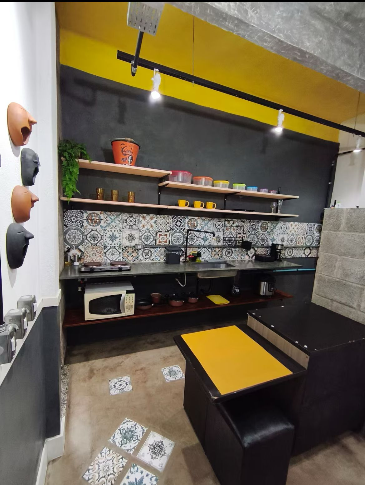

Vamos começar?
Um bom dia começa com uma bela refeição!
Prepare as malas: vamos curtir juntos esse momento mais que especial.
Um bom dia começa com uma bela refeição!
Claro que não poderia faltar nosso cantinho de descanso e de amor.
Cada pedaço com um belo detalhe.
E porque não aproveirar um pouco do céu ao luar?
O melhor lugar do mundo é onde quer que a gente esteja juntos. Feliz aniversário!